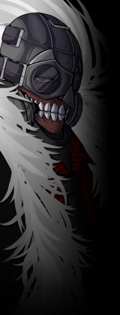

▼抑制機構【 テセウス 】
同名のレジスタンスを前身とする、下層の政府機関。イメージワードは【暴力】。
グングニルから任命を受けた政府組織……といえば聞こえは良いが、
構成員は異能者の他、サイボーグ化やその他の理由で差別を受けるに至った者も多く所属している。 公式サイト原文
下層を管轄する機関。
元々の母体はマフィアであり、数ある下層のマフィアをジョン＝ドゥが一代でまとめあげた。
グングニルから管轄組織として言い渡されているが、
元々が能力者主義であった為か、構成員は能力者や虐げられてきた者、 |
|
 |
ジョン・ドゥ
|
||||||||||||||||||
|
テセウスのビッグ・ボス。
敵対者には容赦しない反面、仲間には寛大・寛容で面倒見も良い。
あらゆるガスを生成する【 ペインベノム 】を持つクリエイター能力者。
特徴的なガスマスクは今もなお腐敗し、朽ちていく体を隠すためのもの。
「気が付けば隣で笑っていた奴が死んでいく。所詮ここはそういう場所さ」 |
|||||||||||||||||||
公式サイト原文
ジョン＝ドゥ
テセウスのビッグ・ボス。特徴的なマスクをする巨漢。
あらゆるガスを生成する【 ペインベノム 】を持つクリエイター能力者。
仲間には寛容ではあるが、逆らう者には容赦しない。
又、それまでバラバラであったマフィアの各勢力は 余談だがなぜか猫などの動物や子供に懐かれやすい。
「気が付けば隣で笑っていた奴が死んでいく。所詮ここはそういう場所さ。」 |
|||||||||||||||||||